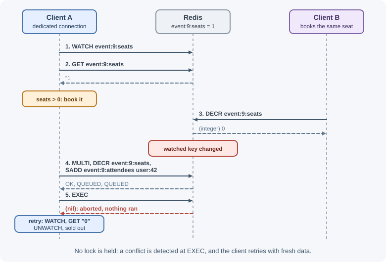
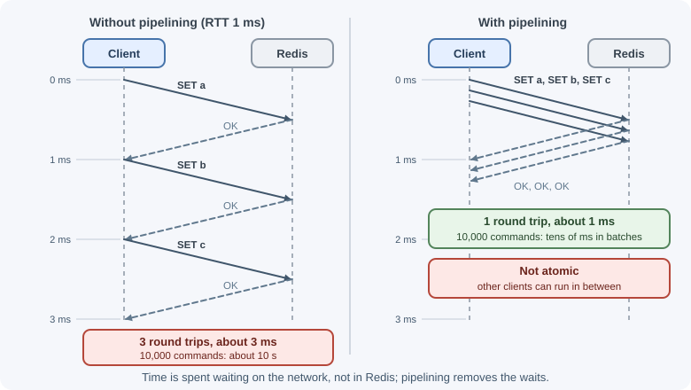
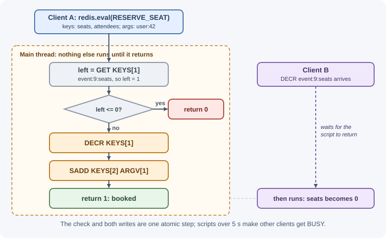

Transactions, Pipelining, and Lua¶
Single Redis commands are atomic, but real features often need several
commands: check a value, then change two keys. Redis gives you three tools
for this. Transactions (MULTI/EXEC, optionally with WATCH) run a
group of commands without interruption. Pipelining sends many commands
in one round trip for speed. Lua scripts (and Redis Functions) run logic
on the server atomically. This lesson explains what each guarantees and when
to use which.
Why it matters¶
Many Redis bugs in production are race conditions or latency problems. Two clients that each read a seat count of 1 and both book the seat; a counter that is incremented but never gets its TTL because the process crashed between commands; a page that makes 200 sequential Redis calls and spends most of its time waiting on the network. Understanding atomicity and round trips fixes all three. Background on race conditions is in concurrency and race conditions.
Real-world usage¶
- BullMQ implements every queue operation (adding a job, moving it to active, extending its lock) as a Lua script on its Redis backend, so each job state transition runs atomically even with many workers competing (BullMQ: Architecture).
- GitLab asks developers to put hash tags in keys that are used together
(
project:{1}:set_aandproject:{1}:set_b) so multi-key operations work on Redis Cluster. For multi-key reads across nodes it uses pipelining that splits commands per node, with a 1,000-command minimum batch forRails.cachereads, and its guide notes that transactions cannot span slots (GitLab: Redis guidelines).
How it works¶
Single-command atomicity¶
Redis executes commands one at a time, so each command completes without
any other command running in the middle. INCR, SET ... NX, ZINCRBY,
LMOVE, and HINCRBY are all atomic. Whenever one command can express the
whole operation, use it: it is the simplest and fastest solution.
The problem starts when an operation needs several commands, especially "read, decide, then write".
MULTI / EXEC transactions¶
client Redis
| MULTI |
|----------------------------->| OK
| DECRBY account:1 50 |
|----------------------------->| QUEUED (not executed yet)
| INCRBY account:2 50 |
|----------------------------->| QUEUED
| EXEC |
|----------------------------->| 1) (integer) 50
| | 2) (integer) 150 (both ran back to back)
What a transaction guarantees:
- Isolation: queued commands run sequentially at
EXEC, and no command from another client runs in between. - All or nothing for queuing errors: if a command is rejected while
queuing (for example a wrong number of arguments),
EXECrefuses to run any of them and returns anEXECABORTerror.
What it does not guarantee:
- No rollback. If a command fails while executing (for example
INCRon a key holding text, or aWRONGTYPEerror), that command returns an error, but the other commands still run and their effects remain. - No reading in the middle. Replies arrive only after
EXEC, so you cannot use the result of one queued command to decide the next. For "read, then decide", you needWATCHor Lua.
DISCARD throws away the queued commands.
WATCH: optimistic locking¶
WATCH tells Redis to abort the next EXEC if any watched key changes
before it runs. This is optimistic concurrency: you do not lock anything,
you detect conflicts and retry.

If nobody touches the watched key, EXEC returns the array of replies as
usual.
Rules:
- Call
WATCHbeforeMULTI, on the same connection. EXEC,DISCARD, andUNWATCHclear all watches.- Under heavy contention, retries pile up; a Lua script is usually better.
Because watches belong to a connection, a client library that shares one
connection among many concurrent requests needs a dedicated connection for
WATCH.
Pipelining¶
Every command normally costs one network round trip (RTT): send, wait for the reply, send the next. Pipelining sends many commands without waiting and reads all replies afterward.

Pipelining also reduces system calls on both sides, so Redis can serve more commands per second. It is purely a performance technique:
- Commands in a pipeline are not atomic; other clients' commands can run between them.
- You can combine both: send a
MULTI ... EXECblock in one pipeline.
Batch large pipelines (for example 1,000 commands at a time) so replies do
not consume too much memory. node-redis automatically pipelines commands
issued in the same tick of the event loop, such as those inside one
Promise.all.
Multi-key commands (MGET, MSET, HMGET) are often even better than a
pipeline when they fit.
Lua scripts¶
A Lua script runs on the server, and while it runs, no other command executes. This gives you atomic "read, decide, write" logic in one round trip.
EVAL "<lua source>" numkeys key1 key2 ... arg1 arg2 ...
Inside the script:
KEYS[1],KEYS[2], ... are the key names passed in.ARGV[1],ARGV[2], ... are the other arguments.redis.call("CMD", ...)runs a command and raises an error if it fails;redis.pcallreturns the error instead.
KEYS vs ARGV matters. Every key the script touches must be passed in
KEYS, never built inside the script from strings. Redis uses the declared
keys to route the script in a cluster and to check access permissions. In
Redis Cluster, all keys used by one script (or one MULTI transaction) must
belong to the same hash slot; use hash tags to group them: only the
part inside {} is hashed, so {user:42}:cart and {user:42}:orders land
on the same slot. Otherwise Redis returns a CROSSSLOT error. See
persistence and high availability
for how slots work.
Caching scripts. Sending the full source every time wastes bandwidth.
SCRIPT LOAD returns the script's SHA1, and EVALSHA sha1 ... runs it. The
script cache can be emptied (for example by a restart or failover), so
clients call EVALSHA and fall back to EVAL when they get a NOSCRIPT
error. Most client libraries do this for you.
Keep scripts short. A running script blocks every other client. After a
configurable threshold (5 seconds by default), Redis starts answering other
clients with BUSY errors; a script that has not written anything can be
stopped with SCRIPT KILL. Never loop over large collections in a script.
Type conversion gotcha: a Lua number returned to the client becomes an integer (decimals are truncated), so return non-integers as strings.
Redis Functions¶
Redis 7.0 added Functions: named Lua functions grouped into libraries,
loaded once with FUNCTION LOAD, and called with FCALL. Unlike the
EVAL script cache, functions are part of the server's data: they are
persisted and replicated, so they survive restarts and failovers, and
applications call them by name instead of shipping source code.
FUNCTION LOAD "#!lua name=seats
redis.register_function('reserve_seat', function(keys, args)
local left = tonumber(redis.call('GET', keys[1]) or '0')
if left <= 0 then return 0 end
redis.call('DECR', keys[1])
redis.call('SADD', keys[2], args[1])
return 1
end)"
FCALL reserve_seat 2 event:9:seats event:9:attendees user:42
Choosing a tool¶
| Need | Use |
|---|---|
| One atomic operation | A single command (INCR, SET NX, LMOVE) |
| Several writes that must not interleave, no decisions in between | MULTI / EXEC |
| Read, decide, write with low contention | WATCH + MULTI / EXEC with retries |
| Read, decide, write with high contention, or complex logic | Lua script or Function |
| Many independent commands, fast | Pipelining (or multi-key commands) |
When to use and when not to use¶
Use these tools when:
MULTI/EXEC: several writes must not interleave with other clients, and no decision depends on a value read in between.WATCH: a read-decide-write operation sees little contention, so retries are rare.- Lua or Functions: the decision and the writes must happen in one atomic step under contention, or you want one round trip for a small piece of logic.
- Pipelining: you send many independent commands and only need speed.
Avoid them when:
- One built-in command already does the job (
INCR,SET NX,LMOVE,ZINCRBY): it is simpler and just as atomic. - You need rollback or durable, multi-record integrity across your business data: use a database transaction.
- A script would loop over large collections or run for long: it blocks every client.
- Keys live in different hash slots in Redis Cluster and cannot share a
hash tag: neither
MULTInor a script can span slots.
| Need | Redis tool | Database transaction instead when |
|---|---|---|
| Move money between two counters | MULTI (no decision) or Lua (with a balance check) |
The balances are records of truth that must survive and roll back |
| Book the last seat | Lua script or Function | The booking must commit together with other database rows |
| Many reads per page | Pipelining or MGET |
Not applicable: this is about round trips, not atomicity |
| Retry-safe update with little contention | WATCH + MULTI |
The data is primarily stored in the database |
Practical examples¶
A transaction in redis-cli, including a runtime error¶
127.0.0.1:6379> SET name "Ada"
OK
127.0.0.1:6379> MULTI
OK
127.0.0.1:6379(TX)> INCR name
QUEUED
127.0.0.1:6379(TX)> SET status "done"
QUEUED
127.0.0.1:6379(TX)> EXEC
1) (error) ERR value is not an integer or out of range
2) OK
The INCR failed, but SET status still ran: there is no rollback.
WATCH conflict¶
# Client A # Client B
WATCH event:9:seats
GET event:9:seats -> "1"
DECR event:9:seats -> 0
MULTI
DECR event:9:seats -> QUEUED
EXEC -> (nil) # aborted: the key changed; A retries
MULTI in Node.js¶
// Fixed-window counter: increment and set TTL together.
const [count] = await redis
.multi()
.incr("rate:login:203.0.113.5")
.expire("rate:login:203.0.113.5", 900, "NX")
.exec(); // replies in order: [count, 1 or 0]
WATCH with retries in Node.js¶
import { WatchError } from "redis";
export async function reserveSeat(conn, eventId, userId) {
// conn: a dedicated connection (from redis.duplicate() or a pool),
// because WATCH state belongs to the connection.
const seatsKey = `event:${eventId}:seats`;
const attendeesKey = `event:${eventId}:attendees`;
for (let attempt = 0; attempt < 5; attempt += 1) {
await conn.watch(seatsKey);
const left = Number(await conn.get(seatsKey) ?? 0);
if (left <= 0) {
await conn.unwatch();
return false;
}
try {
await conn.multi().decr(seatsKey).sAdd(attendeesKey, userId).exec();
return true;
} catch (err) {
if (err instanceof WatchError) continue; // someone else changed it
throw err;
}
}
throw new Error("Too much contention, try again later");
}
The same operation as a Lua script¶
const RESERVE_SEAT = `
local left = tonumber(redis.call("GET", KEYS[1]) or "0")
if left <= 0 then
return 0
end
redis.call("DECR", KEYS[1])
redis.call("SADD", KEYS[2], ARGV[1])
return 1`;
export async function reserveSeatAtomic(eventId, userId) {
const result = await redis.eval(RESERVE_SEAT, {
keys: [`event:${eventId}:seats`, `event:${eventId}:attendees`],
arguments: [String(userId)],
});
return result === 1;
}
No retries and no dedicated connection: the check and both writes happen in one atomic step.

EVALSHA with a NOSCRIPT fallback¶
const sha = await redis.scriptLoad(RESERVE_SEAT);
async function runReserve(keys, args) {
try {
return await redis.evalSha(sha, { keys, arguments: args });
} catch (err) {
if (!String(err.message).startsWith("NOSCRIPT")) throw err;
return redis.eval(RESERVE_SEAT, { keys, arguments: args }); // reloads it
}
}
Pipelining in Node.js¶
// Issued in the same tick: node-redis sends them as one pipeline.
const ids = [17, 18, 19, 20];
const products = await Promise.all(ids.map((id) => redis.get(`product:${id}`)));
// Or with one multi-key command:
const sameResult = await redis.mGet(ids.map((id) => `product:${id}`));
// An explicit, non-atomic batch:
const replies = await redis
.multi()
.set("a", "1")
.set("b", "2")
.incr("visits")
.execAsPipeline(); // pipelined without MULTI/EXEC wrapping
Mass loading with redis-cli¶
$ cat data.txt
SET user:1 "Ada"
SET user:2 "Sam"
$ cat data.txt | redis-cli --pipe
All data transferred. Waiting for the last reply...
errors: 0, replies: 2
Best practices¶
- Prefer a single atomic command whenever one exists.
- Use Lua (or Functions) for read-decide-write logic under contention.
- Declare every key in
KEYS; use hash tags so cluster keys share a slot. - Keep scripts short and bounded; never iterate over large collections.
- Do not rely on
MULTIfor rollback; validate inputs before queuing. - Use dedicated connections for
WATCH, and cap retries. - Pipeline or use multi-key commands instead of many sequential calls.
- Batch very large pipelines to limit memory use.
In production¶
Every client suddenly gets BUSY errors.
- Detect: commands fail with a
BUSYerror; the Redis log reports a script running for too long;SLOWLOG GETshowsEVAL,EVALSHA, orFCALLentries. - Cause: a script ran past
busy-reply-threshold(5 seconds by default), usually because it loops over a large collection. - Fix:
SCRIPT KILL(orFUNCTION KILL) stops it if it has not written anything; if it has written, onlySHUTDOWN NOSAVEis allowed. Rewrite the script to touch a bounded number of keys.
NOSCRIPT errors after a restart or failover.
- Detect:
EVALSHAcalls fail withNOSCRIPT No matching script. - Cause: the script cache is volatile: it is not persisted and can be
cleared on restart, on failover when a replica becomes the primary, or by
SCRIPT FLUSH. - Fix: fall back to
EVALonNOSCRIPT(as in the example above; most clients do it for you), or load the logic as a Redis Function, which is persisted and replicated.
CROSSSLOT errors after moving to Redis Cluster.
- Detect: transactions, scripts, or multi-key commands fail with
CROSSSLOTerrors. - Cause: the keys involved hash to different slots.
- Fix: give related keys the same hash tag (
{user:42}:cart,{user:42}:orders), as GitLab's guidelines require for keys used together.
Throughput collapses under contention.
- Detect: application metrics show many
WatchErrorretries per successful update, and request latency climbs. - Cause: many clients
WATCHthe same hot key, so mostEXECcalls abort and retry. - Fix: move the read-decide-write into a Lua script or Function, which never needs a retry.
Data is half-updated after a transaction.
- Detect: the
EXECreply array contains an error for one command while the others succeeded. - Cause: a runtime error (such as
WRONGTYPEorINCRon text) does not roll back the other commands. - Fix: check every element of the
EXECreply, validate types before queuing, and use a Lua script that checks conditions before writing.
Important terminology¶
- Atomic: Executed as one indivisible step, with no interleaving.
- Transaction: A group of commands executed together with
MULTI/EXEC. - Optimistic locking: Detecting conflicting changes (with
WATCH) and retrying instead of locking up front. - Round-trip time (RTT): The time for a request to reach the server and the reply to return.
- Pipelining: Sending several commands before reading their replies.
- Lua script: Server-side code executed atomically with
EVAL. - Hash tag: The
{...}part of a key that decides its cluster slot. - Redis Function: A named, persisted server-side function called with
FCALL.
Common mistakes and misconceptions¶
- "MULTI rolls back on errors." Runtime errors leave other commands' effects in place.
- "A pipeline is a transaction." Pipelined commands can interleave with other clients.
- Reading inside
MULTIto make a decision. Replies only come atEXEC. - Building key names inside Lua. It breaks cluster routing and ACL checks.
- Long-running scripts. They block all clients and trigger
BUSYerrors. - Using
WATCHon a shared connection. Another request's commands can clear or confuse the watch. - Many sequential awaits in a loop. Each costs a round trip; batch them.
Revision questions¶
- What does a Redis transaction guarantee, and what does it not?
- How does
WATCHimplement optimistic locking, and when does it perform poorly? - Why is pipelining faster, and why is it not atomic?
- Why must a Lua script receive its key names through
KEYS? - How do hash tags help scripts and transactions in Redis Cluster?
- How do Redis Functions differ from scripts run with
EVAL?